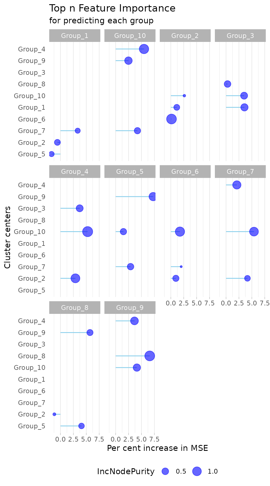

Case Study: Cheese
cheese.Rmd
library(MolPad)
library(dplyr)
#>
#> Attaching package: 'dplyr'
#> The following objects are masked from 'package:stats':
#>
#> filter, lag
#> The following objects are masked from 'package:base':
#>
#> intersect, setdiff, setequal, unionIntroduction
This vignette provides a comprehensive guide on using MolPad for a case study, including data pre-processing, network generation, and result analysis.
Washed-Rind Cheese Microbial Communities
Cheese making is an ancient craft that involves the coagulation of milk proteins to form curds, which are then separated from the liquid whey. The curds are processed, shaped, and aged to develop the desired texture and flavor. Various factors, such as the type of milk, specific cultures of bacteria, and aging conditions, contribute to the unique characteristics of each cheese. One crucial step in this process is the aging practice, where regular washing with a brine solution plays a significant role.
In the process of producing cheese, regular washing with a brine solution is an aging practice that can homogenize the microbial communities on the cheese’ surface and facilitate intermicrobial interactions. In the following parts, we will analyze a longitudinal data set of three washed-rind cheese communities collected during cheese ripening.
Data
For the analysis, we use a data set contained in the study by Smith et al. (2022) on microbial communities in cheese. The original research investigated the successional dynamics that occur within cheese rind microbial communities using a combination of 16S rRNA amplicon, Illumina, and PacBio sequencing. We functionally and taxonomically annotate (using eggNOG (21) and MMseqs2 (22)) the contigs they have generated from the Illumina reads, to demonstrate the utility of MolPad using a single-omic. Specifically, we focus on Cheese Sample A and Cheese Sample C. For more detailed information on our attached data, please check this documentation.
data("cheese")
str(cheese)
#> tibble [106,239 × 18] (S3: tbl_df/tbl/data.frame)
#> $ ID : chr [1:106239] "1" "2" "3" "4" ...
#> $ A_1 : int [1:106239] 38 23 24 3 58 12 1 14 1 3 ...
#> $ A_2 : int [1:106239] 23 6 5 2 14 9 1 7 1 1 ...
#> $ A_3 : int [1:106239] 27 4 37 4 45 14 0 14 3 5 ...
#> $ A_4 : int [1:106239] 5 0 10 2 13 4 1 4 4 0 ...
#> $ A_5 : int [1:106239] 11 9 19 16 32 13 0 4 1 1 ...
#> $ C_1 : int [1:106239] 13 21 3 56 82 2 4 17 7 2 ...
#> $ C_3 : int [1:106239] 1 1 0 1 3 0 0 0 0 1 ...
#> $ C_4 : int [1:106239] 3 0 1 7 8 1 0 1 2 2 ...
#> $ C_5 : int [1:106239] 0 2 4 17 3 4 0 1 8 6 ...
#> $ GO_ID : chr [1:106239] NA NA NA NA ...
#> $ KEGG_ID: chr [1:106239] NA NA NA NA ...
#> $ domain : chr [1:106239] NA NA NA NA ...
#> $ phylum : chr [1:106239] NA NA NA NA ...
#> $ class : chr [1:106239] NA NA NA NA ...
#> $ order : chr [1:106239] NA NA NA NA ...
#> $ family : chr [1:106239] NA NA NA NA ...
#> $ genus : chr [1:106239] NA NA NA NA ...
str(annotations)
#> tibble [86,156 × 9] (S3: tbl_df/tbl/data.frame)
#> $ ID : chr [1:86156] "9" "10" "11" "12" ...
#> $ GO_ID : chr [1:86156] "-" "-" "-" "-" ...
#> $ KEGG_ID: chr [1:86156] "-" "-" "-" "-" ...
#> $ domain : chr [1:86156] "Bacteria" "Bacteria" "Bacteria" "Bacteria" ...
#> $ phylum : chr [1:86156] "Pseudomonadota" "Pseudomonadota" "Pseudomonadota" "Pseudomonadota" ...
#> $ class : chr [1:86156] "Alphaproteobacteria" "Alphaproteobacteria" "Alphaproteobacteria" "Alphaproteobacteria" ...
#> $ order : chr [1:86156] "Caulobacterales" "Caulobacterales" "Hyphomicrobiales" "Hyphomicrobiales" ...
#> $ family : chr [1:86156] "Caulobacteraceae" "Caulobacteraceae" "Bartonellaceae" "Brucellaceae;-_Brucella/Ochrobactrum group" ...
#> $ genus : chr [1:86156] "Caulobacter" "Caulobacter;-_unclassified Caulobacter" "Bartonella" "Brucella" ...Pre-process
Data and Annotations
Here we select a ‘type’ column with phylum to describe
the characteristic of cheese data. Also, the columns phylum
and class are taken as tags for elemental composition.
In this section, we will introduce data preparing steps for analysis.
The annotations dataset contains various columns that describe the
characteristics and properties of samples. First, we select the ‘type’
column with phylum to provide a broad categorization of the
microbial communities present on the cheese surface. This categorization
helps in understanding the overall composition and diversity of microbes
at a high taxonomic level. Then we run the pre_process()
function to clean and standardize the data.
cheesedata <- cheese |>
select(ID, A_1:C_5, phylum) |>
rename(type=phylum) |>
pre_process()To further annotate the dataset, we also use the columns
phylum and class as tags for the elemental
composition of the microbial communities. The phylum column
represents a major taxonomic rank, giving us a broad overview of the
microbial distribution. The class column provides more
detailed information, allowing us to delve deeper into the specific
types of microbes present.
pathchee <- gAnnotation(annotations,"phylum","class")After pre-processing, here is what the two datasets that we will put into the dashboard look like:
# data
cheesedata[112:115,]
#> # A tibble: 4 × 11
#> ID A_1 A_2 A_3 A_4 A_5 C_1 C_3 C_4 C_5 type
#> <chr> <dbl> <dbl> <dbl> <dbl> <dbl> <dbl> <dbl> <dbl> <dbl> <chr>
#> 1 112 0.943 -0.471 -0.471 -0.471 -0.471 2.36 -0.471 -0.471 -0.471 Other
#> 2 113 0.786 -0.124 0.126 -0.623 -0.637 2.33 -0.667 -0.593 -0.593 Other
#> 3 114 1.22 -1.09 -0.430 -0.829 -0.170 1.43 -1.30 0.455 0.715 Other
#> 4 115 2.67 -0.333 -0.333 -0.333 -0.333 -0.333 -0.333 -0.333 -0.333 Other
# annotation
pathchee[112:115,]
#> # A tibble: 4 × 9
#> ID GO_ID KEGG_ID domain Pathway taxonomic.scope order family genus
#> <chr> <chr> <chr> <chr> <chr> <chr> <chr> <chr> <chr>
#> 1 145 - ko:K00004 Bacte… Pseudo… Unknown NA NA NA
#> 2 147 - ko:K00004 Bacte… Actino… Actinomycetes NA NA NA
#> 3 148 - ko:K00004 Bacte… Bacill… Bacilli Baci… Bacil… Lysi…
#> 4 149 - ko:K00004,ko:K0… Bacte… Actino… Actinomycetes NA NA NACluster Input
In this section, we generate clusters from the first dataset above
using the gClusters function. This function takes the
cheese dataset (cheesedata) as input and generates clusters
based on specified parameters. Here, we set the number of clusters to 10
(ncluster = 10) and specify the maximum number of clusters
to consider for determining the optimal number of clusters
(elbow.max=15).
cluschee <- gClusters(cheesedata,ncluster = 10,elbow.max=15)network input
After generating the clusters for major patterns, we proceed to
obtain network results from the clusters. Taking the cluster centroids
as the nodes, the prediction process for edges is divided into
individual regression tasks, where each cluster centroid is
independentally predicted from the expression of all the other cluster
centroids, using random forests. We pick the top 3 related predictors
for each cluster centroid and save the network output for future use.
This is achieved using the gNetwork() function.
networkchee <- gNetwork(cluschee,ntop = 3)To gain more insight into the network results, we can visualize the
details using the gNetwork_view() function, as shown
below.
gNetwork_view(networkchee)
Run Dashboard
Once the clusters and network results are obtained, we can proceed to
run the dashboard. This involves declaring the annotations and then
executing the dashboard using the gDashboard() function.
Here, we pass the cheese dataset (cheesedata), cluster results
(cluschee), network results (networkchee), and specify column names and
types for annotation identifiers.
gDashboard(cheesedata,
cluschee,
pathchee,
networkchee,
id_colname = c("GO_ID","KEGG_ID"),
id_type = c("GO","KEGG"))